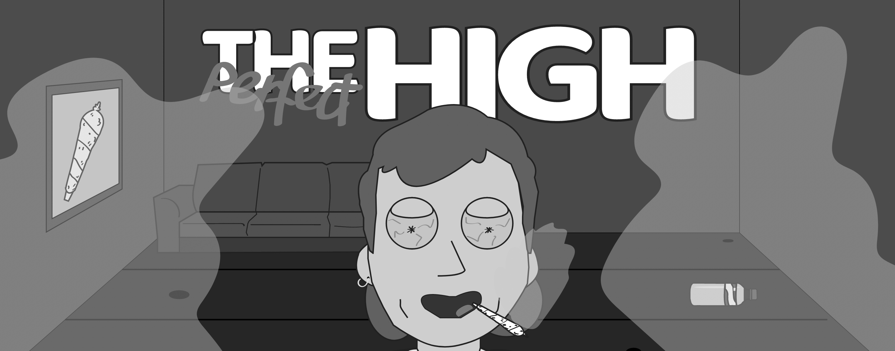

04.04.01 Temaopgave
Tema 4 var “Animation” og der var stor fokus på javascript. Målet var at skabe animationer med css og ved hjælp af javascript metoder som “addClass” og “removeClass” og event-listeners som “animationend”, “click” og “load” har jeg lavet et lille spil. Spillets design har jeg udviklet og tegnet efter stilarten flat design, dette kommer til udtryk i de simple og runde former både i forgrunden og baggrunden.
